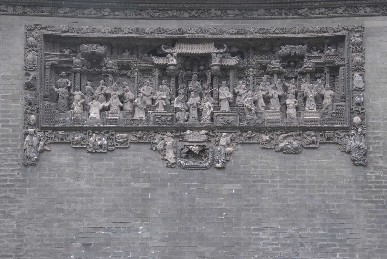

此图取材自《水浒传》。聚义厅是当年梁山好汉商议军情，调兵遣将、排定座次的地方。画面雕刻的是梁山义士晁盖、宋江、吴用、林冲等众多英雄好汉汇集在聚义厅的宏大场面。这幅砖雕以戏剧中的舞台为背景，中间是高大雄伟的聚义厅，两侧的木柱上有一副对联：“万古英雄罗宇宙；千秋义气贯乾坤”，后面还有楼阁。晁盖站立在聚义厅的正中，手持羽毛扇的吴用站在晁天王的下方，再下为林冲等人。整个画面主体突出，情节生动，气氛热烈，共有52人，场面大，人物多，仿照舞台上的楼阁和聚义厅雕刻得极为逼真，众多的梁山好汉人物造型各异，栩栩如生。
「位于：首进西路」